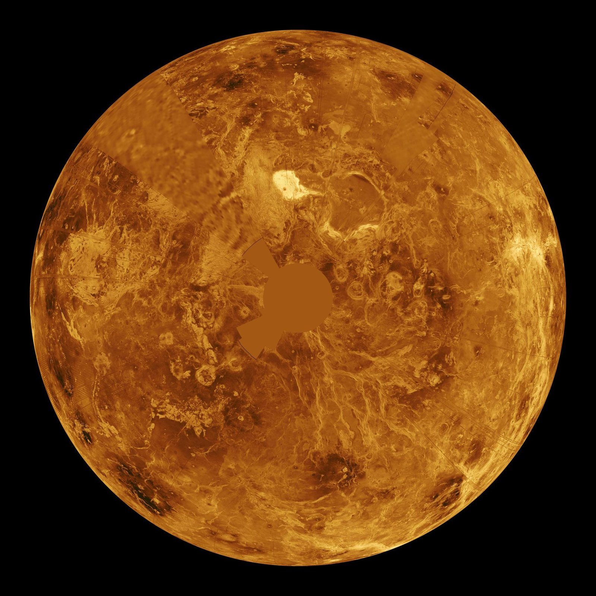

Αφροδίτη
Venus · Βραχώδης πλανήτης
Παρόμοια σε μέγεθος με τη Γη, αλλά με επιφάνεια 464 °C και ατμόσφαιρα 92 φορές πυκνότερη.
- Απόσταση από Ήλιο
- 108,2 εκατ. χλμ.
- Διάμετρος
- 12.104 χλμ.
- Έτος
- 224,7 γήινες ημέρες
- Ημέρα
- 243 γήινες ημέρες (ανάδρομη)
- Θερμοκρασία
- ≈ 464 °C
- Δορυφόροι
- Κανένας

Μια ατμόσφαιρα από κόλαση
Η ατμόσφαιρα της Αφροδίτης αποτελείται κατά 96,5% από διοξείδιο του άνθρακα και 3,5% άζωτο, με ίχνη διοξειδίου του θείου. Στην επιφάνεια η πίεση είναι 92 bar — αντίστοιχη με 900 μέτρα κάτω από την επιφάνεια της θάλασσας στη Γη. Τα πυκνά νέφη θειικού οξέος καλύπτουν ολόκληρο τον πλανήτη και ανακλούν το 75% του ηλιακού φωτός, γι' αυτό η Αφροδίτη είναι το φωτεινότερο αντικείμενο στον νυχτερινό ουρανό μετά τη Σελήνη.
Οι άνεμοι στα ανώτερα στρώματα φτάνουν τα 360 χλμ./ώρα και ολοκληρώνουν μια περιστροφή γύρω από τον πλανήτη σε μόλις 4 ημέρες — «υπερπεριστροφή» που ακόμη μελετάται. Στην επιφάνεια, αντίθετα, οι άνεμοι είναι σχεδόν ανύπαρκτοι.
Επιφάνεια και ηφαίστεια
Κάτω από τα νέφη, η Αφροδίτη είναι ένας βραχώδης κόσμος με πεδιάδες βασάλτη, οροσειρές και εκατοντάδες ηφαίστεια. Περισσότερο από το 80% της επιφάνειας καλύπτεται από ηφαιστειακά πετρώματα, και υπάρχουν ενδείξεις ενεργού ηφαιστειότητας — το ραντάρ του διαστημοπλοίου Magellan εντόπισε κανάλια λάβας και δομές που μοιάζουν πρόσφατες.
Η επιφάνεια είναι σχετικά νέα, ηλικίας 300–600 εκατομμυρίων ετών, πιθανώς επειδή ο πλανήτης ανακυκλώνει τον φλοιό του με εκτεταμένες ηφαιστειακές εκρήξεις. Δεν υπάρχουν κρατήρες μικρότεροι από 2 χιλιόμετρα: μικροί μετεωρίτες καίγονται στην πυκνή ατμόσφαιρα.
Εξερεύνηση και το μέλλον
Η Αφροδίτη ήταν ο πρώτος πλανήτης που επισκέφθηκε διαστημόπλοιο (Mariner 2, 1962). Τα σοβιετικά Venera 7–16 προσεδαφίστηκαν και επέζησαν μόνο λίγες ώρες, καταγράφοντας τις πρώτες εικόνες από την επιφάνεια. Το Magellan χαρτογράφησε το 98% του πλανήτη με ραντάρ τη δεκαετία του 1990.
Νέες αποστολές ετοιμάζονται: το VERITAS και το DAVINCI της NASA και το EnVision της ESA θα μελετήσουν την ατμόσφαιρα, την ηφαιστειότητα και την ιστορία του νερού. Το μεγάλο ερώτημα: είχε ποτέ ωκεανούς η Αφροδίτη;
Πέντε πράγματα
Ήξερες ότι…
Μικρές λεπτομέρειες για τον Αφροδίτη που συχνά ξαφνιάζουν.
- Η Αφροδίτη περιστρέφεται ανάδρομα: ο Ήλιος ανατέλλει από τη δύση και δύει στην ανατολή. Μια ημέρα της διαρκεί περισσότερο από ένα έτος της.
- Είναι ο πλησιέστερος πλανήτης στη Γη — η ελάχιστη απόσταση είναι περίπου 38 εκατομμύρια χιλιόμετρα.
- Η θερμοκρασία στην επιφάνεια είναι σταθερή μέρα και νύχτα, γιατί η θερμότητα μεταφέρεται αποτελεσματικά από τους ανέμους και την πυκνή ατμόσφαιρα.